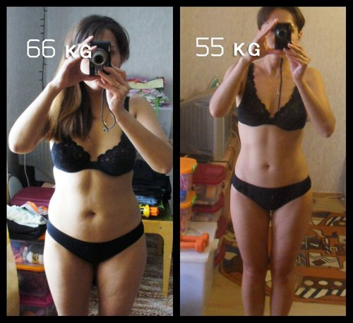

W dążeniu do idealnego wyglądu, porównywanego do wyglądu modelki, wiele dziewcząt próbuje drastycznie schudnąć. Dzisiaj stało się to prostsze niż kiedykolwiek – na rynku produktów odchudzających pojawił się potężny pogromca tłuszczu . Lekarze biją na alarm.
U większości osób odchudzających się zauważa się spadek wagi ciała do 10 kg w ciągu tygodnia. Niektóre osoby traciły do 30-35 kg w ciągu miesiąca. Na początku to im się podobało, ale wkrótce się przestraszyli. Stracili kontrolę nad swoim zachowaniem związanym z jedzeniem – specjalnie spożywali żywność wysoko kaloryczną, jednak nie byli w stanie przybrać na wadze. Nawet po powrocie do normalnej diety, kobiety nadal chudły zamiast, tyć.

Przeprowadzono wywiady z tysiącem osób, które zbyt szybko i zbyt gwałtownie straciły na wadze, przyjmując suplement diety Z odpowiedzi ankietowanych można było zaobserwować, iż wystąpiły u nich nietypowe objawy, takie jak nudności, wymioty, lub osłabienie.
Skład suplementu został również dokładnie przebadany przez naukowców Instytutu Żywienia. Analiza wyników pozwoliła ustalić, że:
Głównym składnikiem się jagody goji, które zawierają 18 aminokwasów – czyli znacznie więcej niż w mleku matki, a także 22 minerałów, 6 poliacharydów – tutaj jagody są rekordzistkami, jedynymi na świecie, masę witamin – na przykład zawartość witaminy C w jagodach Goji jest 500 razy wyższa niż w cytrynie.
Niezależne laboratorium przeprowadziło badania i wydało opinię:
„ Jagody Goji (łt. lycium barbarum) są nietrujące, ich skład jest nietoksyczny i nie mogą stanowić zagrożenia dla zdrowia ludzkiego. W 2 kapsułkach znajduje się dzienna dawka kwasu liponowego, który jest odpowiedzialny za równowagę tłuszczów w ciele ludzkim. Jedząc tyle owoców waga spadnie o 3-5 kg w ciągu tygodnia, bez szkody dla zdrowia. Jednakże przekroczenie zalecanych dawek może mieć poważny wpływ na zdrowie."
Ankieta przeprowadzona wśród osób, które w krótkim okresie straciły dużo na wadze, potwierdziła, że wszystkie kobiety przekraczały zalecaną dawkę i spożywały o 3 do 5 razy więcej kapsułek! Dlatego też ich masa ciała zmniejszała się znacznie szybciej – do 7-12 kg w ciągu tygodnia. Widząc takie wyniki, wielu osobom trudno było się zatrzymać – rezultat: szybka utrata kilogramów.
Instytut Żywienia ostrzega – zbyt szybka utrata masy ciała może prowadzić do poważnych problemów zdrowotnych!
Link do certyfikowanego dostawcy
Bądź ostrożny – schudnąć przy pomocy , który zawiera przede wszystkim jagody Goji, jest łatwo, ale nie zapomnij o maksymalnej dawce dziennej, której kategorycznie nie wolno przekraczać – 3-4 kapsułek.
Zadbaj o swoje zdrowie!


Komentarze (47/47)
